O invitație către încetinire
Fiecare pas
este o respirație.
Aleea terapeutică din Grădina Timpului este construită în formă de potcoavă și realizată manual, din pietre de râu, pietriș, conuri de brad și buștean.
Mersul desculț aduce corpul în prezent, relaxează mintea și deschide o cale simplă, dar profundă, spre liniște. Fiecare atingere e un moment de conectare.
Descoperă texturile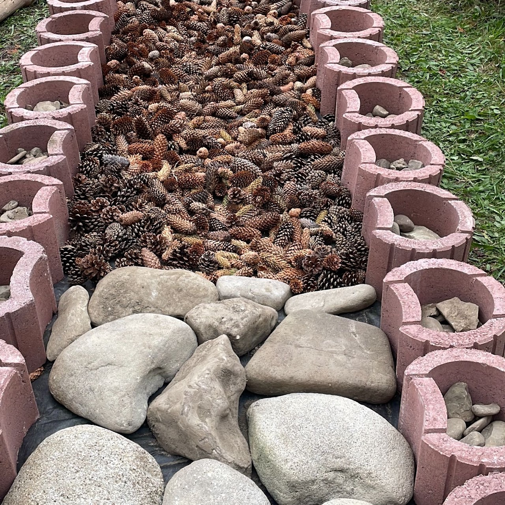
începutul traseului senzorial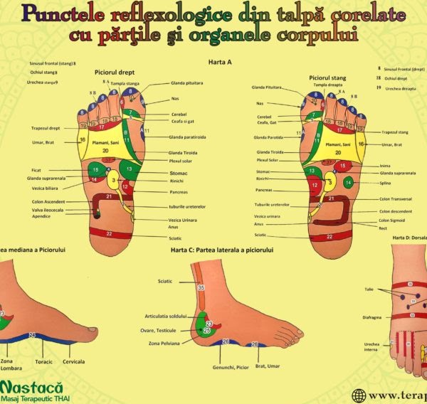
Un masaj natural al tălpilor
Patru texturi,
un traseu senzorial.
Pietrele de râu energizează și oferă un masaj natural, pietrișul fin stimulează delicat, conurile de brad activează presiunea plantară, iar bușteanul pentru echilibru lucrează coordonarea și stabilitatea.
Diversele texturi stimulează punctele reflexogene și circulația sanguină și ajută la relaxare; în cazul copiilor, contribuie la prevenirea platfusului și la îmbunătățirea posturii. Parcurgerea traseului face parte din terapia inițiată de bavarezul Sebastian Kneipp.
Este potrivită pentru adulți și copii, indiferent de nivelul de activitate.
Vezi beneficiile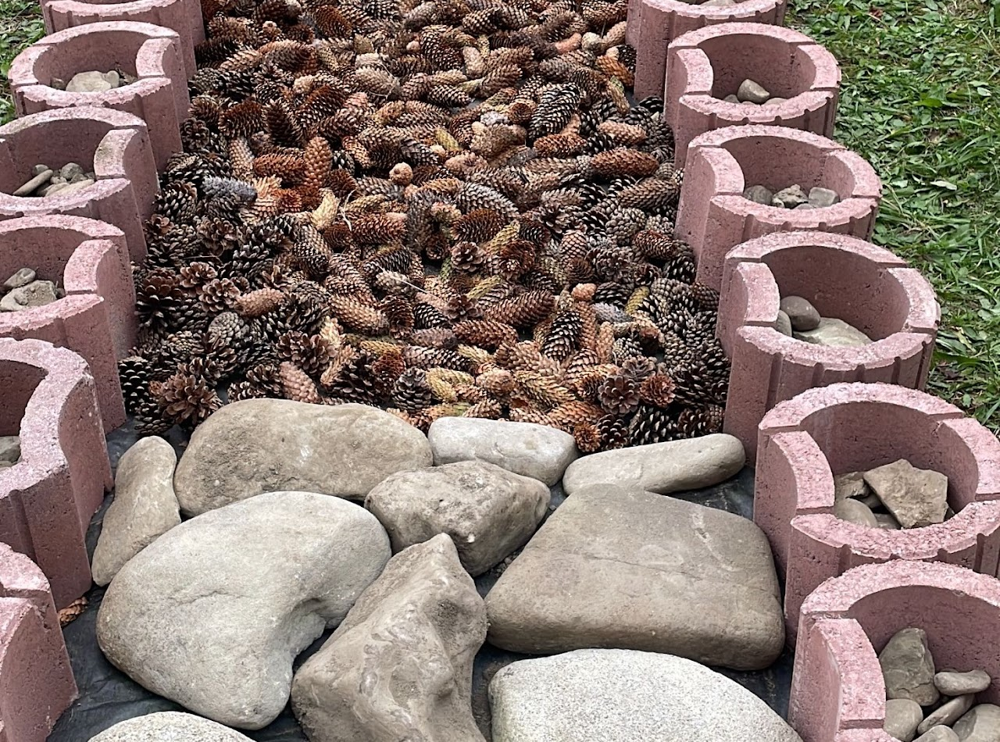
de parcurs desculț, pas cu pasDe ce merită
Un traseu bun
pentru toate vârstele.
- Reduce stresul și tensiunea acumulată.
- Activează punctele reflexogene din tălpi.
- Stimulează circulația.
- Îmbunătățește echilibrul și postura.
- Conectează corpul la natură (împământare).
- Creează o stare de calm interior.
- Este o experiență plăcută pentru toate vârstele.
Nopți de vară în grădină
Stele căzătoare
care trezesc dorințe.
În nopțile de vară, Grădina Timpului devine un loc de liniște și magie, în care cerul se deschide pentru spectacolul perseidelor.
Așază-te pe o pătură sau pe un șezlong, ascultă sunetele naturii și privește cerul în căutarea stelelor căzătoare. Este o experiență potrivită pentru familii, cupluri și oricine caută liniște, inspirație și momente autentice în natură.
Rezervă o vizită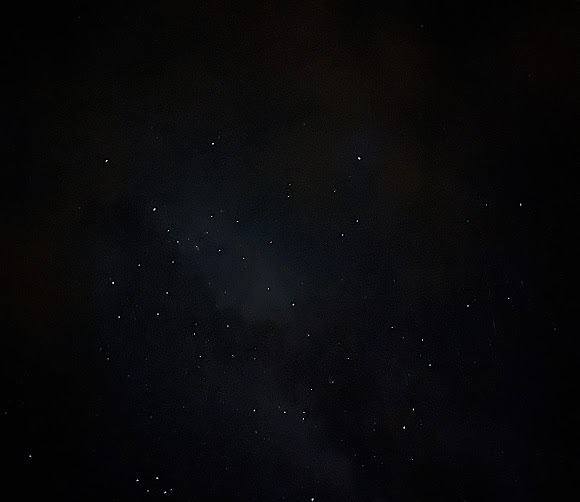
cerul nopții, deasupra grădinii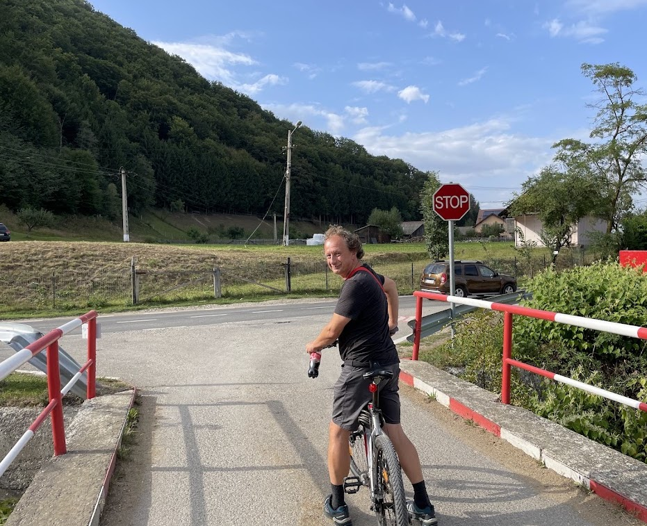
Vama pe bicicletăPe două roți
Unde drumul se întâlnește
cu muntele.
În Vama Buzăului, bicicleta devine un mod de a descoperi natura în ritmul ei firesc.
Traseele de cicloturism șerpuiesc printre păduri, dealuri și sate liniștite, oferind priveliști spre Munții Ciucaș și Valea Buzăului. Pedalatul aici nu este doar sport, ci o formă de explorare, liniște și conectare cu peisajul.
Natura devine profesor
Plante medicinale,
cu povești vechi de secole.
Atelierul de recunoaștere a plantelor medicinale este o invitație la explorare, învățare și reconectare cu tradițiile simple ale vindecării naturale.
Descoperă plantele care cresc în grădină și în împrejurimi și învață cum se recunosc, la ce se folosesc și cum pot fi integrate în viața de zi cu zi.
Înscrie-te la atelier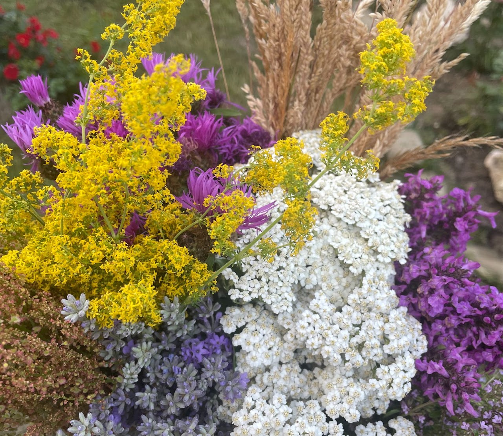
plantele grădinii, cu numele lor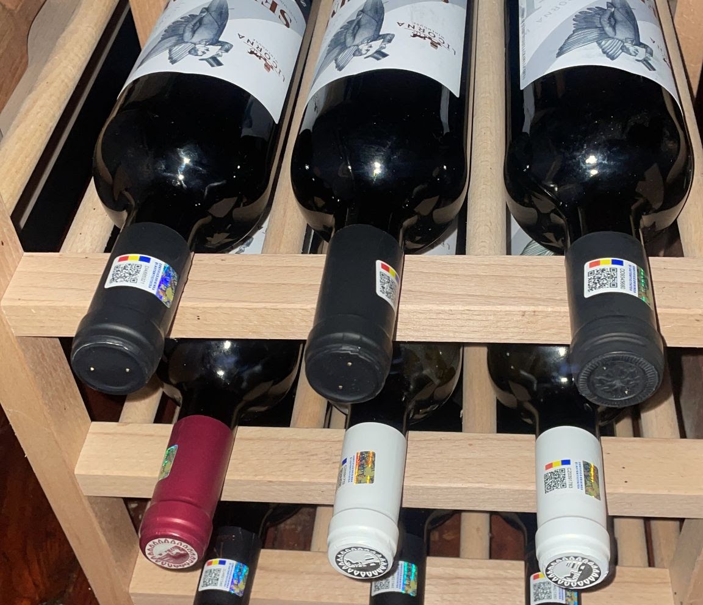
două pahare, la apusO poveste despre pământ, soare și oameni
Vinuri alese,
la apusul blând.
Degustarea de vin este o invitație la încetinire, conversație și bucuria momentelor simple, petrecute în natură.
Savurează vinuri alese în aer liber, înconjurat de grădină și liniște. Degustarea este destinată exclusiv adulților și se desfășoară într-un cadru responsabil și prietenos.
Programează o degustareCând se lasă seara
Un mic cinematograf
în aer liber.
Grădina se transformă într-un mic cinematograf în aer liber, unde filmul se împletește cu foșnetul frunzelor și cerul înstelat.
Așază-te pe pături, perne sau șezlonguri, savurează o băutură caldă și bucură-te de o seară de film sub cerul liber. Proiecțiile sunt organizate ocazional, în cadrul unor evenimente tematice.
Rezervă o seară de film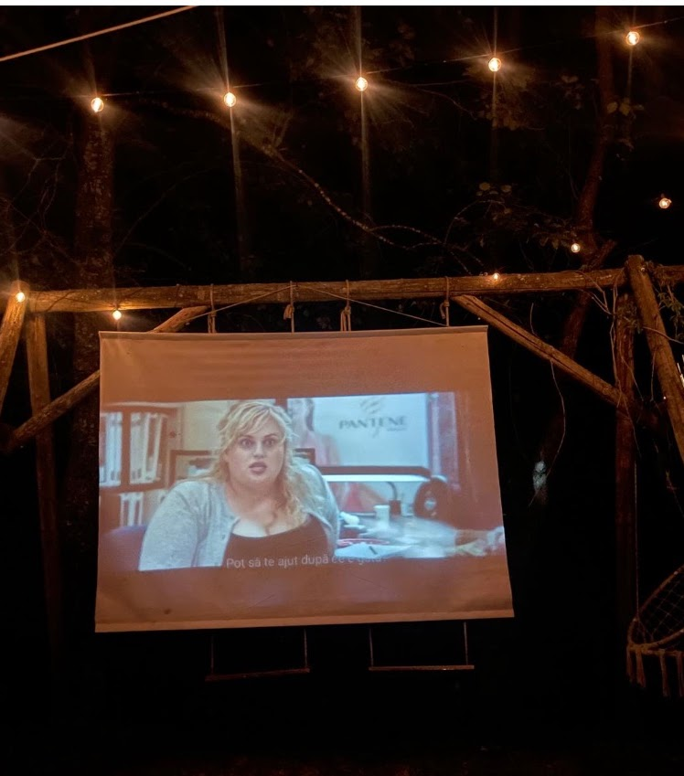
seară de film sub cerul liber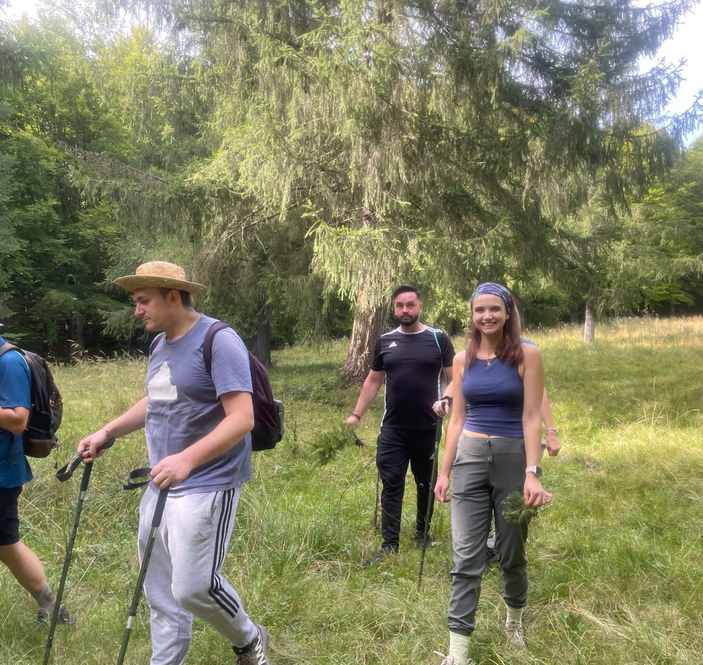
poteci spre Pasul Tabla BuțiiMișcare lentă, pe poteci
Poteci spre munte,
pădure și liniște.
Drumețiile în Grădina Timpului și împrejurimi sunt o invitație la explorare și conectare cu peisajul Munților Ciucaș și al Văii Buzăului.
Fiecare pas devine o descoperire: sunetul pădurii, mirosul de mușchi și flori, priveliștile largi spre munți și sate. În zonă poți urma traseele forestiere spre Buzaiel și Pasul Tabla Buții, potrivite pentru drumeți experimentați.
Brunch de duminică în grădină
Plăcinte sălăjene,
ca odinioară.
În fiecare duminică, Grădina Timpului devine un loc al gusturilor de acasă, unde tradițiile din Sălaj se întâlnesc cu liniștea grădinii.
Inspirate din rețetele tradiționale ale familiei lui Flaviu, plăcintele sunt coapte pe plită sau în tigaie, cu umpluturi simple și gustoase, care aduc aminte de mesele în familie.
- Degustare de plăcinte sălăjene tradiționale.
- Plăcinte cu brânză, cartofi, varză sau dulcețuri.
- Brunch în aer liber, în grădină.
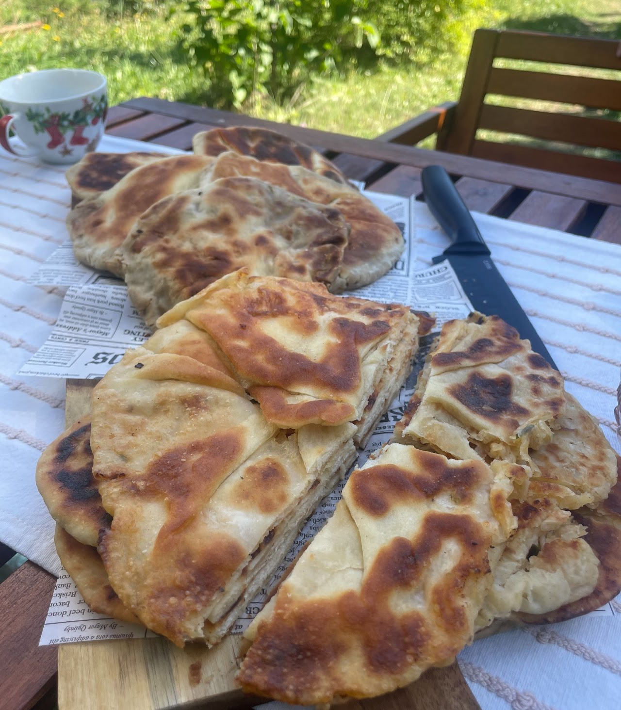
masa de duminică, în aer liber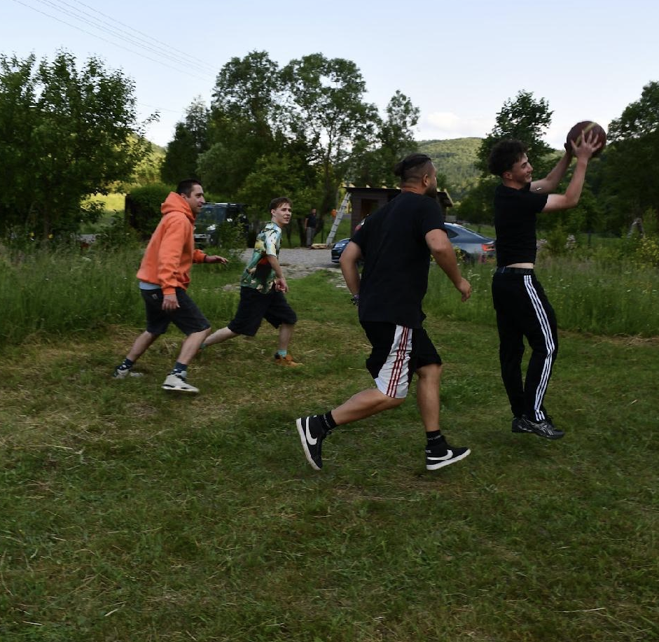
mișcare și spirit de echipăSport și distracție în aer liber
Campionatul de baschet
al grădinii.
O activitate recreativă pentru copii, adolescenți și adulți, care promovează mișcarea, spiritul de echipă și distracția în aer liber.
Evenimentele și campionatele sunt organizate în funcție de condițiile meteo, pentru confortul și siguranța participanților. Înscrierea se face prin formularul de rezervare.
Înscrie-te la campionatTe așteptăm
Grădina unde
te întorci la tine.
Lasă graba deoparte și vino să petreci câteva ore în tihnă, în Buzaiel.
Planifică o vizită